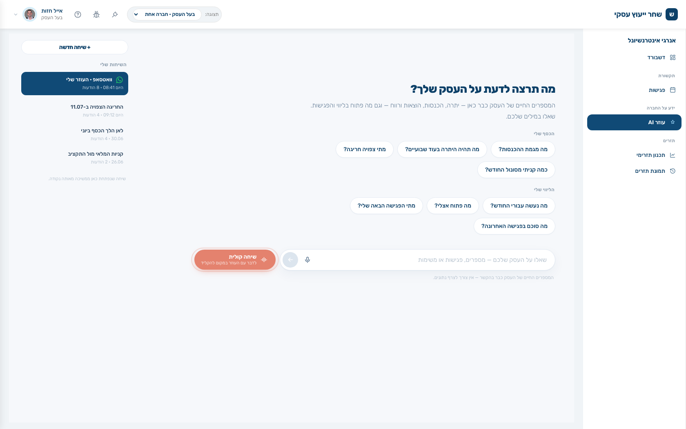

המערכת שלוקחת מהיועץ העסקי את התפעול, ההקלדות, הרדיפות,
הזיכרון, ההכנות והסיכומים — ומשאירה לו את השעה שבה הוא שווה כסף.
אני פותח במשפט אחד ועוצר. לא מציג מוצר — מציג את הבעיה שהם חיים בה. השאלה מיד אחרי: כמה מהשבוע האחרון שלך היה באמת ייעוץ?
2
יועץ טוב, לוח זמנים של פקיד
אתה מוכר שיקול דעת — ומשלם עליו בשעות הקלדה.
בסוף החודש אתה יודע שני דבריםשני לקוחות נפלו בין הכיסאות.לא כי הם לא חשובים — כי לא היה זמן.ואתה לא יכול לקחת עוד לקוח.לא כי אין ביקוש. כי אין שעות.
בשמונה בבוקר: ארבע־עשרה הודעות בוואטסאפ. אף אחת מהן אינה ייעוץ
ההכנה לפגישה נעשית בתשע וחצי, מהזיכרון
הסיכום נכתב בין ארבע לשש — ואולי יישלח מחר
בין לבין: קיטלוג תנועות, התאמות, ורדיפה אחרי חומר בפעם השלישית
כשלקוח עוזב — זה כמעט אף פעם לא בגלל שהייעוץ היה גרוע. זה בגלל שהוא הרגיש נטוש בין הפגישות.
פותח בכאב שלהם, לא במוצר. שואל בקול כמה מהשבוע האחרון היה ייעוץ אמיתי, ומחכה לתשובה.
3
המתמטיקה שנועלת אותך
4–8 שעות תפעול לחודש פר לקוח — זה מה שמקבע אותך על עשרה לקוחות.
7–10שעות פר לקוח לחודש · בלי HK
1–1.5שעות פר לקוח לחודש · עם HK
×3לקוחות באותו יום עבודה
80 שעות עבודת לקוחות בחודש. כשכל לקוח עולה 7–10 שעות תפעול —
זה עשרה לקוחות, וזו התקרה. כשהפעילות היחידה שנשארת היא ייעוץ, אותן 80 שעות
מכסות 25–30 לקוחות ועוד נשאר זמן לפיתוח עסקי.
התקרה שלך היא שעות — לא יכולת ייעוץ.
זה השקף שמוכר. עושה את החשבון בקול מול המספרים שלהם. אם המספר נכון אצלם, כל השאר הוא רק ה"איך".
4
התפעול — HK עושה את החודש במקומך
חמישה שלבי עבודה וחמש בדיקות, לכל חברה, כל חודש. אתה לא נוגע.
בדיקות: שורה תקציבית · חודשי · תקציבי · חומר · שינויים
התזרים לא יוצא עד שכל חריגה דווחה או הוכרעה
מנהל התזרים עונה ללקוח כל יום — אליך מגיע רק מה שדורש יועץ
תזכורת שנתקעה שלוש פעמים מסומנת «חם» ורק אז עולה אליך
זמן התפעול נמדד פר חברה — ידוע כמה עולה כל לקוח.
מדגיש שזה שירות ולא פיצ׳ר — אדם שמפעיל מערכת. זה מה שאף תוכנה לא מעתיקה.
5
הזיכרון
יועץ עם 25 לקוחות לא זוכר מה כואב לכל אחד. המערכת זוכרת.
שתים־עשרה קטגוריות: מעגל החברה ומעגל אישי
ניזון מפגישות, שיחות, קבוצה וצ׳אט — לבד
חוסר שביעות רצון מזוהה לפני שהלקוח עוזב
מה שפנימי נשאר פנימי — הלקוח לא רואה
אחרי שנה עם HK — לזיכרון הזה אין תחליף בשום מקום.
אומר את המילה נעילה בגלוי: אחרי שנה אי אפשר להחליף את זה. הזיכרון הופך לנכס של המשרד.
6
התקשורת — מסך אחד
פגישה, שיחת טלפון, קבוצת וואטסאפ ועוזר AI — אותם תוצרים, מקום אחד.
כל ערוץ מייצר סיכום, משימות וזיכרון
בורר לקוח = כל מה שקרה איתו, במבט אחד
ג׳וב לילי סוגר כל יום בעצמו
שיחה שלא שויכה ממתינה בתור — ולא נעלמת
שיחה בלי שיוך לחברה אינה מתומללת — אין למי לייחס אותה.
מסנן לקוח אחד ומראה איך הכל נופל למקום. השאלה היא "מה קורה עם הלקוח הזה", לא "אילו פגישות היו".
7
ההכנה נגזרת — לא נכתבת
אתה פותח הכנה שנבנתה מחדש מהזיכרון החי, שתי דקות לפני הפגישה.
מה סוכם, מה השתנה, מה כואב, ואיך לדבר איתו
בר טרום־פגישה: זום, הקלטה, או ביטול ותיאום מחדש
אחרי: סיכום, משימות וזיכרון — לאישור בלבד
שעה וחצי פר פגישה יורדת לדקות
מסמך הכנה שנכתב לפני שבוע כבר לא נכון. זה תמיד נכון לרגע שפתחת.
מקריא הנחיה אישית מהמסך — "פתח במספרים, הוא מאבד סבלנות מהקדמות".
8
המערכת נותנת משוב עליך
אחרי כל פגישה — ביקורת מקצועית על ניהול הפגישה שלך. לעיניך בלבד.
מיקוד וחיבור ל«למה»
הקשבה ומרחב ללקוח
עבודת עומק ברובד הסמוי
הובלה, העצמה והנעה לפעולה
כל מערכת אחרת מודדת את הלקוח. זו היחידה שעוזרת ליועץ להשתפר.
הפיצ׳ר שאין לאף אחד — עוצר עליו. אומר במפורש: לא נשלח ללקוח ולא למנהל.
9
המספרים — ברמת CFO
תכנון קדימה, ודוח רווח והפסד שנבנה על הכרטסת האמיתית מרואה החשבון.
תכנון תזרימי — יעד לכל קטגוריה, יתרות שמתגלגלות קדימה, וחריגה שנראית לפני שהיא קוריתתכנון חשבונאי — 14,083 תנועות ← 631 כרטיסים. AI ממפה מבנה; כל שקל מחובר בקוד דטרמיניסטי
יועצים חוששים ש-AI ימציא מספרים — מפריד חד: AI מסווג, קוד מחבר, יש בדיקות ביקורת.
10
הלקוח מקבל מערכת — ואתה את הקרדיט
תקציר בוקר שנכתב מכל הזיכרון וממספרי הבנק הטריים — בשם המשרד שלך.
הלקוח לא רואה «HK» בשום מקום — לא בכותרת, לא בשם הבוט, ולא בתפקידים.
«היתרה עומדת על 75,187 ₪, וצפויה חריגה ב-11.07 אם ההעברה לא תבוצע»

העוזר בוואטסאפ — הלקוח שואל במילים שלו, והמספרים החיים של העסק כבר בהקשר
שקף השימור. הלקוח מרגיש מטופל כל החודש. מספר את המקרה: אחרי התראת חריגה הוא שאל "מה זאת אומרת חריגה".
11
ועוד — מה שמאפשר למשרד לגדול
מתחת למכסה יש שכבת ניהול שלמה שהיועץ כמעט לא נוגע בה.
1משימות ובקשותמה שביקשת ממנהל התזרים — עם מצב ותאריך יעד, בנפרד מהמשימות שלך
2ניהול המשרדיועצים, הרשאות, לידים, חיוב וגבייה
3אוטומציה11 סוגי הודעות פר איש קשר · תבניות וואטסאפ מאושרות
4מספרי טלפוןמספר ← נציג ← חברה. זה מה שמחבר שיחה נכנסת ללקוח
5קטגוריות ובסיס ידעמה שהתפעול מקטלג לפיו, ומה שה-AI יודע על התחום
6בדיקות AI ועזרהבקרת איכות על התוצרים · הסבר מותאם בכל מסך
עובר מהר בכוונה. המסר: מוצר בוגר ולא דמו — בלי לשרוף זמן לפני שקף הסגירה.
12
השורה התחתונה
כל מה שאינו ייעוץ יורד ממך — ונשארת השעה שבה אתה שווה כסף.
0שעות תפעול פר לקוח
25–30לקוחות באותו יום עבודה
כל יוםשירות ללקוח בשם המשרד שלך
נתחיל מלקוח אחד.נעבור על התיק, נבחר לקוח שהתפעול שלו כבד, ונריץ לו חודש מלא. אתה תגיע לפגישה ותראה מה השתנה.
השיחה 30 דקות. אין מצגת.
חוזר למספר מהשקף השלישי וסוגר את המעגל. הבקשה קונקרטית: לקוח אחד לחודש הרצה.